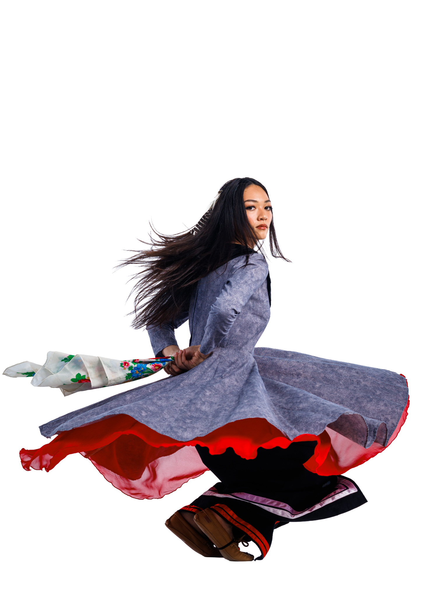

BYU LIVING LEGENDSCREATIVE DIRECTION / 01 STORIESIN MOTION. CULTURE. CONNECTION. COMMUNITY.LIVINGLEGENDSEVERY MOVEMENT TELLS A STORY. Made to move you. SOCIAL & VISUAL STORYTELLING Explore preview ↗ 01Living LegendsBringing a story to life, on screen and on stage.Visual designStorytelling↗
BYU MAKERSPACEEXPERIENCE DESIGN / 02 BIG IDEAS.SMALLFIRST STEPS. ● ● ●THE MAKERSPACE✳MAKE SOMETHING YOURSWhat will youmake today?▱3D printingBuild layer by layer↗✳Laser cuttingMake your mark↗⌁Explore the spaceStart with a little curiosity↗YOUR NEXT IDEA STARTS HERE.01 / 03 LESS FRICTION.MORE MAKING. FROM “HOW?” TO “I MADE THAT.” Explore preview ↗ 02BYU MakerspaceMaking the first step feel a little easier.UX thinkingService design↗
ORRA DATINGPRODUCT THINKING / 03 orraA little curiosity.A real connection. 9:41••• ▰orraMORE THAN A PROFILEStart withsomethingyou love.Live music☀ OutsideGood foodArt & designMovie nightsFind your people 9:41••• ▰orra“SKIP THE SMALL TALKWhat’s one thingyou could talkabout for hours?For me? Probably…Start a conversation DESIGNED AROUND CONNECTION Explore preview ↗ 03Orra DatingExploring what helps people connect.Product strategyUser experience↗